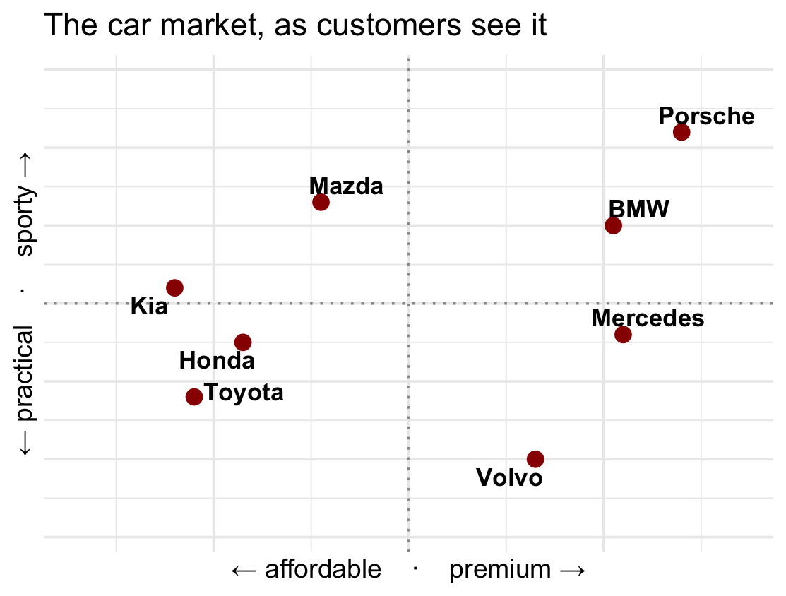
MKT 566 · Fall 2026
USC Marshall School of Business
Oct. 13 and 15, 15 minutes per group. Send your slides by Monday, Oct. 12. The plan does not need to be finished: this is where you get feedback.
| What we look at | What a good proposal does |
|---|---|
| The question | says clearly what you want to find out, and why a marketer would care |
| The data | says where your data comes from, and shows you can get it |
| The method | says how you will answer the question, with at least one tool from this class |
| The talk | clear slides, finishes on time, speaks to the room, handles questions well |
Each of the four parts gets 10, 14, 16, 18, or 25 points, from “needs improvement” to “excellent”, so the total is out of 100. The proposal counts for 15% of your group project grade.
Every model so far had an outcome to predict: a listing’s price, then whether it is a gem. Today there is no outcome. There are just customers, described by numbers, and one question: who is similar to whom?
What changes
What stays
Grouping similar customers is segmentation, and almost everything in marketing is segment-specific:

A sketch, not data. You will build a real one with PCA at the end of today.
Two tools today. K-means finds the groups. PCA draws the map you need to see them, and it powers the perceptual map.
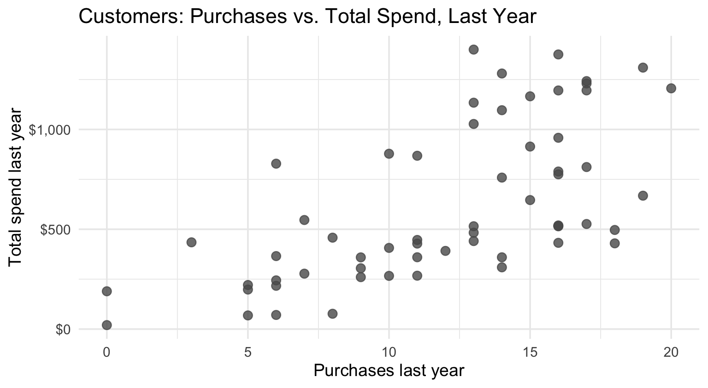
Each dot is a customer: how often they bought, and how much they spent in total. How many groups do you see, and how would you describe each one?
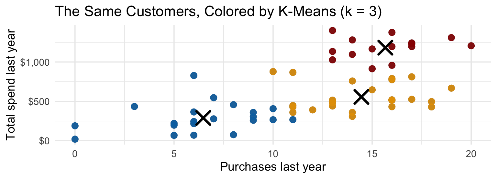
You pick k, the number of clusters. The algorithm does the rest:
K-means never sees names, labels, or meanings. It groups rows of numbers by distance. Everything the clusters mean comes later, from you.
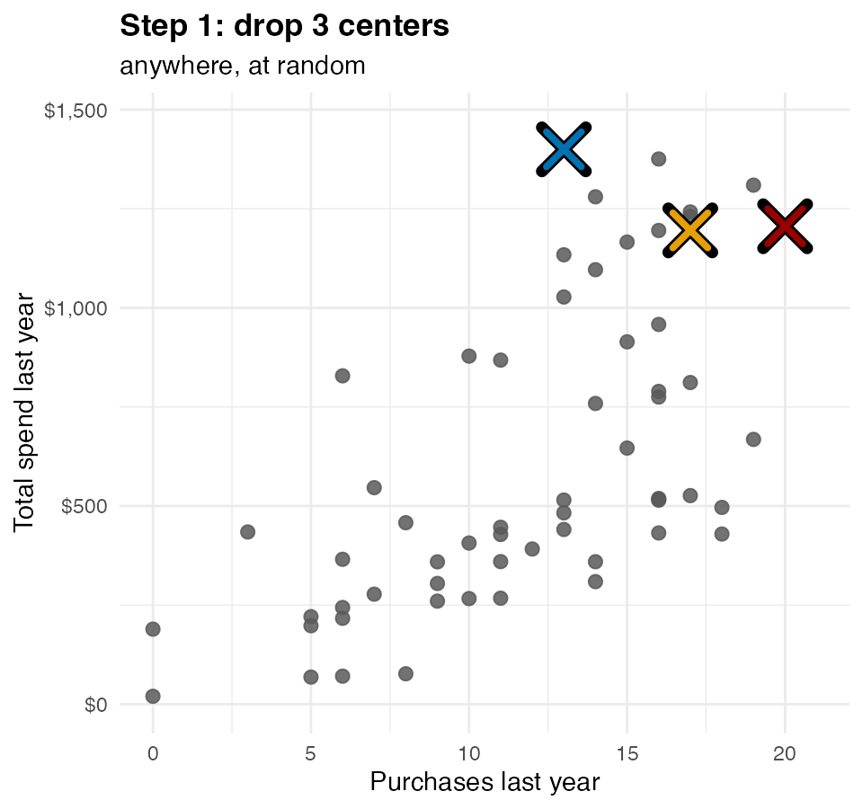
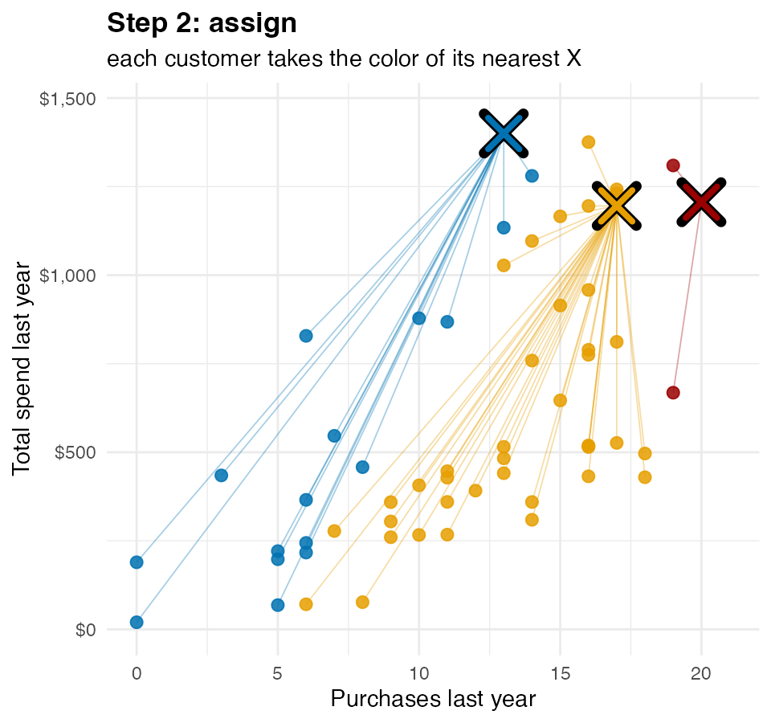
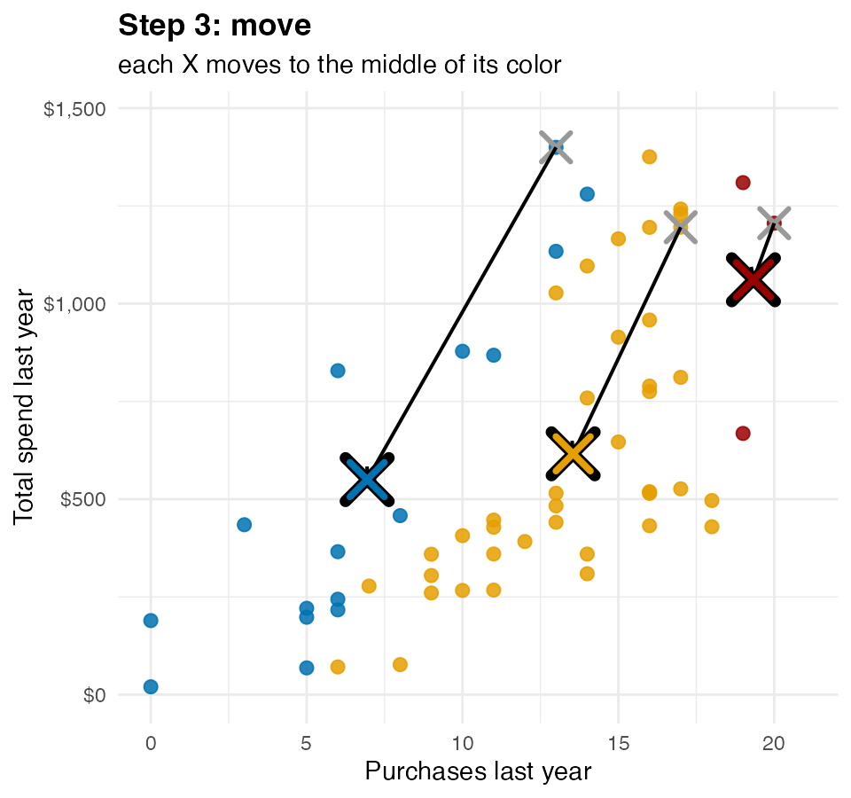
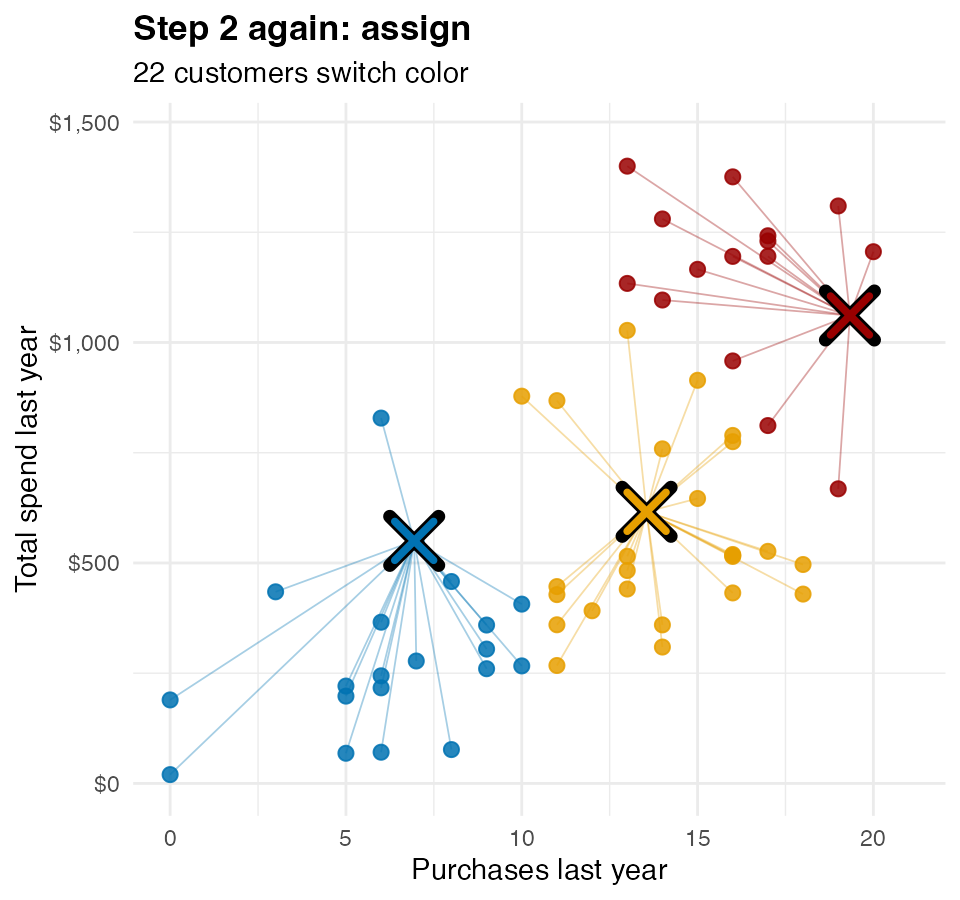
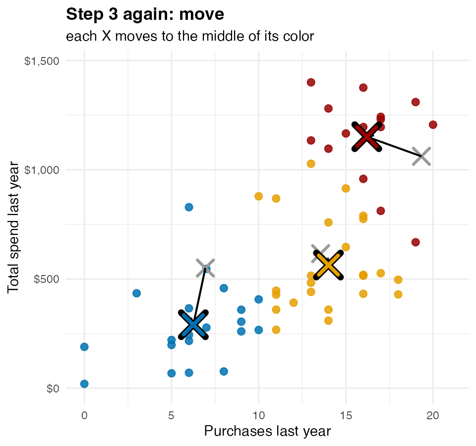
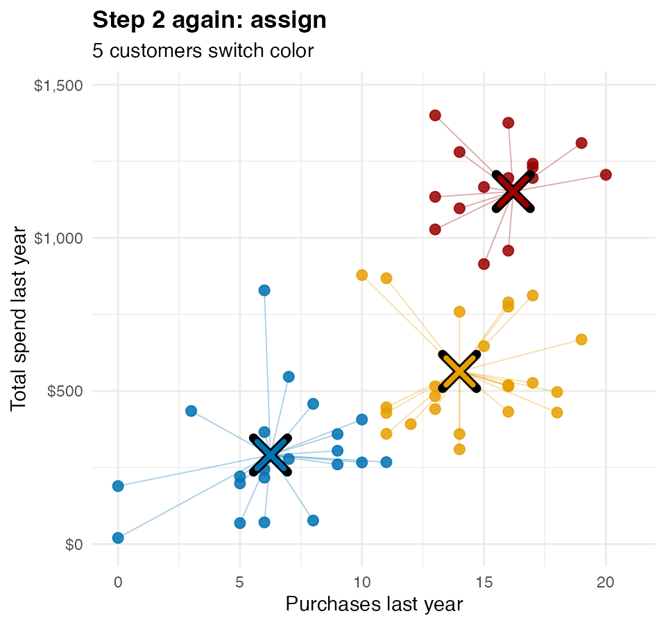
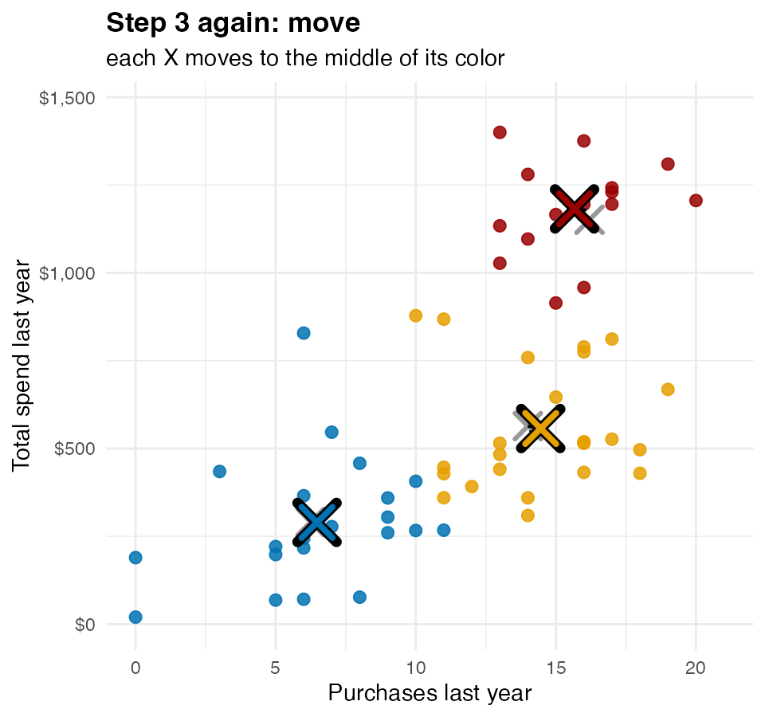
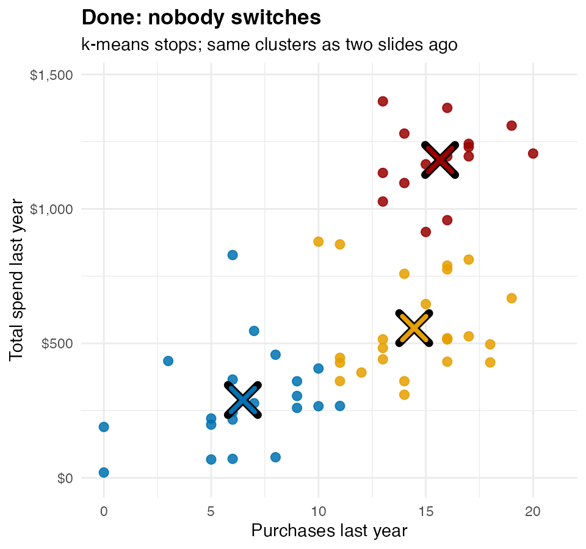
Each click runs one step. Before you click, guess: which customers will switch color?
Where to start, what to do, and why:
| Step | What to do | Why |
|---|---|---|
| 1. Choose the columns | the six importance ratings | they say what customers want, which the store can act on |
| 2. Check the units | standardize if the columns use different scales | k-means measures distance, so big numbers would dominate |
| 3. Choose k | run k-means for k = 2 to 10, look for the elbow | more clusters always fit better; the elbow shows when extra clusters stop paying off |
| 4. Run k-means | k = 3, from many random starts | puts shoppers with similar ratings together |
| 5. Profile | the average rating of each cluster | k-means only says 1, 2, 3; the averages say what each group wants |
| 6. Name | a short name for each cluster | managers act on “bargain hunters”, not on “cluster 1” |
| 7. Describe | age, income, and job of each cluster | who they are, and how to reach them |
40 respondents rated how important six store attributes are to them when buying office equipment, each on a 1–10 scale:
variety of choice, electronics, furniture, quality of service, low prices, and return policy
Data from R for Marketing Students.
Suppose you cluster on income ($15,000 to $70,000) and age (20 to 60):
Standardize whenever the columns have different units. Today’s survey ratings all share the same 1–10 scale, so we can skip it, and keep the cluster averages in interpretable 1–10 units.
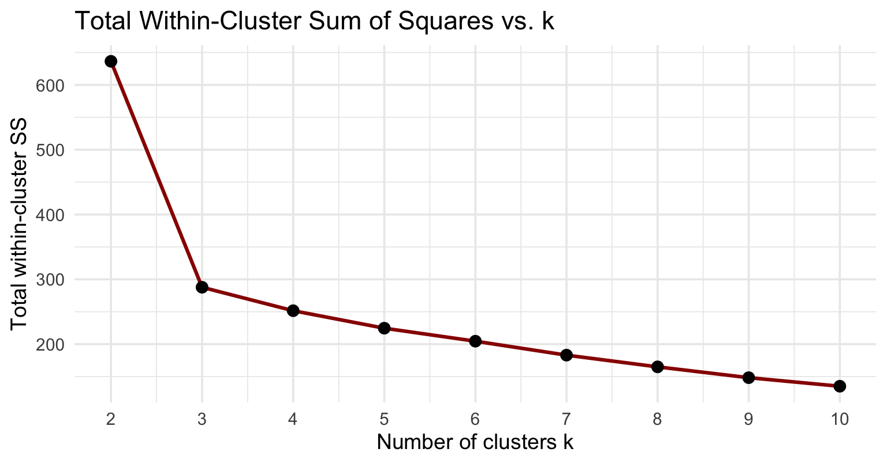
For each k, run k-means and add up the squared distances from every point to its cluster center: the “spread left inside the clusters”. Where does the curve bend?
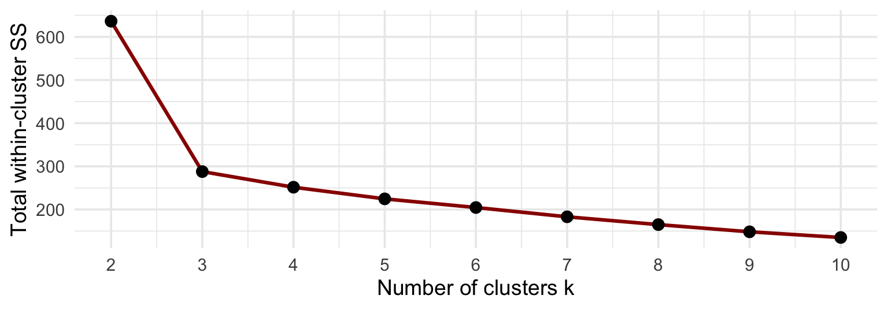
We ran k-means on the six ratings with k = 3, the elbow’s choice. It split the 40 respondents into clusters of 14, 18, and 8. The labels are just 1, 2, 3, in no particular order. The table shows each cluster’s average rating of each attribute (1 to 10):
| Cluster | Respondents | Variety | Electronics | Furniture | Service | Low prices | Return policy |
|---|---|---|---|---|---|---|---|
| 1 | 14 | 6.9 | 2.8 | 1.4 | 3.5 | 8.3 | 6.3 |
| 2 | 18 | 9.1 | 6.1 | 5.8 | 2.4 | 3.7 | 3.2 |
| 3 | 8 | 5.0 | 4.4 | 1.8 | 8.5 | 2.5 | 4.4 |
Read it row by row: what does each cluster rate high, and what does it rate low? Try to give each row a name before the next slide.
We name each cluster by reading its row in the profile table (last slide): which attributes it rates high, and which it rates low.
| Cluster (n) | Rates high | Rates low | Our name, and why |
|---|---|---|---|
| 1 (n = 14) | low prices 8.3, return policy 6.3 | furniture 1.4, electronics 2.8 | bargain hunters: the lowest price, and an easy return if it goes wrong |
| 2 (n = 18) | variety 9.1, electronics 6.1, furniture 5.8 | service 2.4, low prices 3.7 | one-stop shoppers: a huge range, so they can buy everything (electronics and furniture too) in one store |
| 3 (n = 8) | quality of service 8.5 | low prices 2.5, furniture 1.8 | service seekers: good service matters most, price least |
Every name must be backed by the averages. If a colleague cannot find your name in the profile table, rename it.
The three columns we kept out of the clustering describe who landed in each segment:
| Segment | Professional | Income | Age |
|---|---|---|---|
| Bargain hunters (14) | 50% | $32,000 | 31 |
| One-stop shoppers (18) | 33% | $48,000 | 44 |
| Service seekers (8) | 75% | $48,000 | 49 |
Because these columns played no part in forming the clusters, the differences across segments are a finding, not something we built in.
We already have the clusters and their averages. Why do anything else?
PCA turns six ratings into a two-axis map that keeps most of the information. We use it to see the segments, and to find the few dimensions customers really differ on.
You do not need to know how the computer finds the axes. You need to answer two questions: how many axes to keep, and what each axis means.
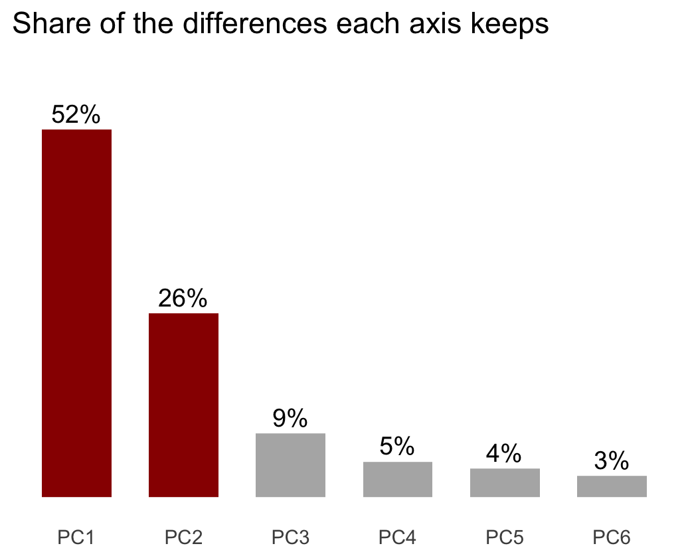
Two axes keep 78% here, so the map tells most of the story. If they kept, say, 40%, the map would hide more than it shows.
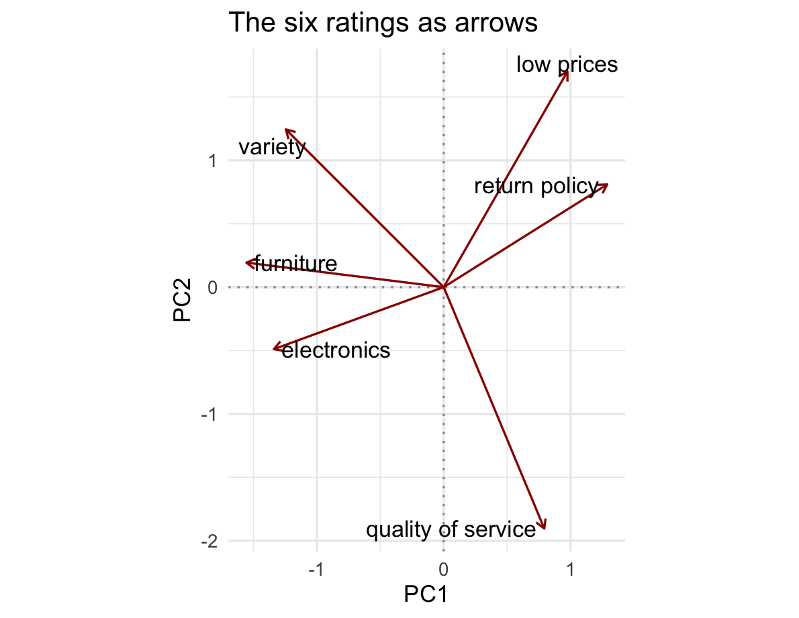
Each arrow is one rating. It points to where shoppers who rate it high end up on the map:
PCA could just as well have flipped left and right, or up and down. What matters is which arrows point the same way, and which point opposite ways.
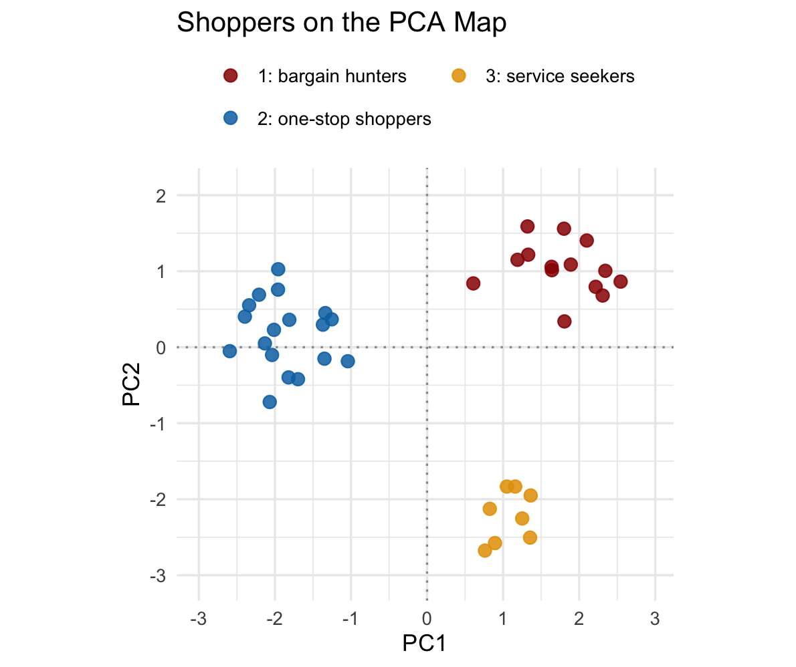
Each dot is a shopper, placed by PCA. The colors are the k-means clusters.
PCA drew the map; k-means picked the colors. The two never talked to each other.
Do the colors form regions?
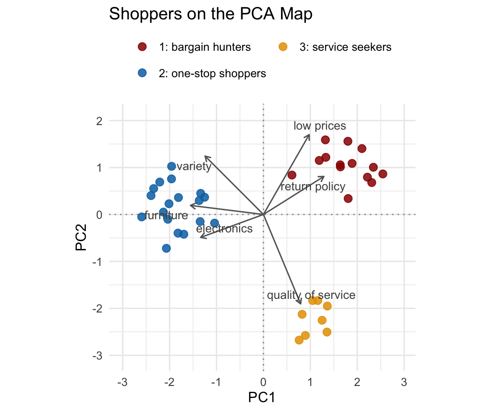
A separate survey. Respondents rated four office-equipment brands on six things. Each number is the average rating:
| Brand | Large choice | Low prices | Service quality | Product quality | Convenience | Preference |
|---|---|---|---|---|---|---|
| OfficeStar | 5.2 | 2.1 | 4.2 | 3.7 | 2.7 | 5 |
| PaperNCo | 4.4 | 4.5 | 2.3 | 2.6 | 1.4 | 3 |
| OfficeEquipment | 3.9 | 2.6 | 3.1 | 3.1 | 4.7 | 3 |
| Supermarket | 2.3 | 4.1 | 1.8 | 2.9 | 5.1 | 1 |
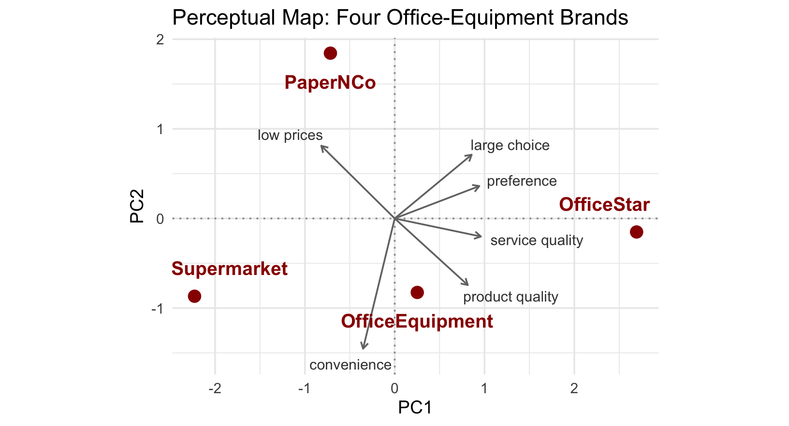
Each red dot is a brand; each arrow is one of the six ratings. Which brands compete head-to-head? Who owns which attribute?
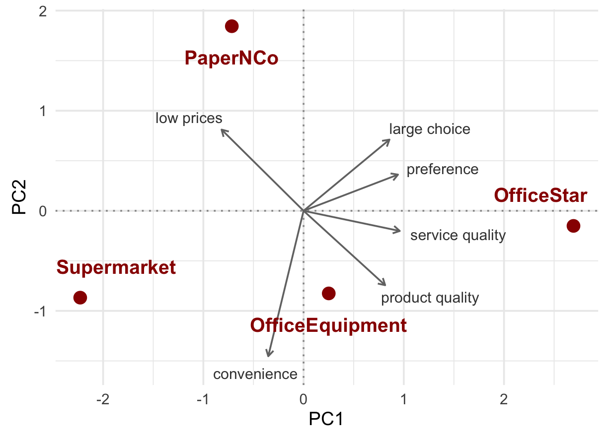
Perceptual maps answer positioning questions: who are my real competitors (neighbors on the map), what do I own (my nearest arrows), and where is the gap nobody occupies.
| K-means | PCA | |
|---|---|---|
| Question | which customers belong together? | how do I show six ratings on one map? |
| Output | a group label per customer (1, 2, 3) | two scores (PC1, PC2) per customer |
| You choose | the columns, and k | the columns, and how many axes to keep |
| You read it with | the averages (profile table) | the arrows |
| Marketing use | segmentation | perceptual maps; seeing the segments |
Three cautions for both methods:
| Step | What to do | Why |
|---|---|---|
| 1. Pick the columns | what customers want (the ratings); standardize if the scales differ | groups built on needs, with fair distances |
| 2. Find the groups | choose k with the elbow, then run k-means | shoppers with similar ratings end up together |
| 3. Read the means | the average rating of each cluster, then name each one | what each group wants, in exact numbers |
| 4. Describe | age, income, and job of each cluster | who they are, and how to reach them |
| 5. Check the axes | run PCA; keep two axes if they hold most of the differences | a map is only useful if it tells most of the story |
| 6. Map and compare | plot the shoppers on PC1 and PC2, color them by cluster, add the arrows | see whether the groups really separate, and what separates them |
Steps 3 and 6 check each other. The means give exact numbers, one attribute at a time; the map shows all the shoppers at once. The check: each cluster should sit next to the arrows of what it rates highest. Here it does (bargain hunters, who rate low prices 8.3, sit by the low-prices arrow), so the segments are real, not something k-means made up.
The R code and data behind every chart and table:
w6-code.zip: both scripts and both datasetsw6-1-clustering-class.R: elbow, k-means, profiles, the PCA mapw6-1-pca-class.R: the brand perceptual mapMKT 566 · Marketing Analytics